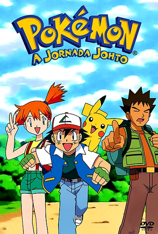

Resenha das Temporadas do Anime Pokémon
Temporada 1: Liga Índigo
A primeira temporada do anime Pokémon, também conhecida como Liga Índigo, introduz os espectadores ao mundo dos treinadores Pokémon. Acompanhamos as aventuras de Ash Ketchum, um jovem treinador, e seu fiel parceiro Pikachu, enquanto eles viajam pela região de Kanto em busca de se tornar um Mestre Pokémon. Ao longo da temporada, Ash enfrenta desafios, conhece novos amigos e rivais, e se prepara para competir na Liga Pokémon.
Temporada 2: Liga Laranja

Na segunda temporada, Ash continua sua jornada Pokémon na região de Johto. Ele participa da Liga Laranja, uma competição exclusiva daquela região, e enfrenta novos desafios e adversários. Além disso, Ash faz novas amizades, como Misty e Brock, e continua a aprender sobre os diferentes tipos de Pokémon e estratégias de batalha.
Temporada 3: A Jornada Johto
A terceira temporada do anime Pokémon, conhecida como "A Jornada Johto", continua a emocionante jornada de Ash, Misty e Brock pela região de Johto. Com a introdução de novos Pokémon e personagens, como Totodile e Whitney, a temporada oferece batalhas emocionantes e desafios significativos para Ash. Além disso, explora a mitologia de Johto, apresentando lendários como Ho-Oh e Celebi. Com sua mistura de ação, humor e desenvolvimento de personagens, "A Jornada Johto" mantém o encanto que tornou Pokémon tão popular entre os fãs.